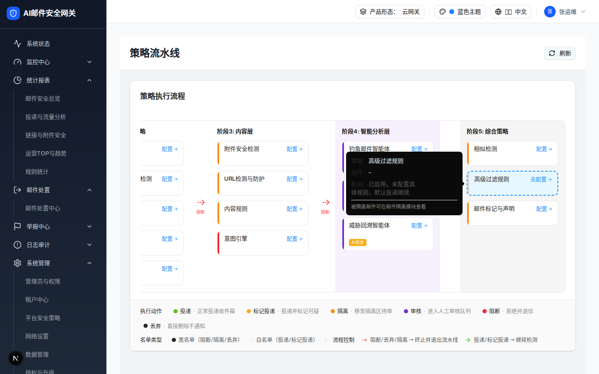

2.1 流水线节点卡片「高级过滤规则」（层级 0）
| 项 | 值 |
|---|---|
| demo 源 | strategy-pipeline-page.tsx 节点渲染 L923-1000（policy key advancedRules, nameKey pipeline.advancedRules, stage 5, type configurable, 优先级 5001） |
| 交互层级数 | 1（本层级 0 内嵌；点击进入层级 1 综合策略抽屉） |
| 浏览器实测状态 | 未配置态：橙色虚线边框 + 灰色左色条 + 按钮文案「去配置」。注意：源码 mock 节点数据带 todayHits:12 / action 隔离，但页面按「未配置具体规则」渲染未配置样式（见 §9 差异 D-8） |
0 交互层级 0：节点卡片默认态（hover 出 Tooltip，点击打开抽屉）
触发路径：打开 /filter-rules/pipeline → 阶段5「综合策略」列第二张卡片。
高级过滤规则
策略：高级过滤规则
动作：-
影响：已启用，未配置具体规则，默认投递继续
被隔离邮件可在邮件隔离模块查看
✔ demo 行为：点击卡片任意处或「去配置」→ 打开综合策略抽屉并定位到高级过滤规则 → 见 层级 1：规则列表视图

| 元素 | 类型 | 文案/图标 | 交互行为 | 视觉 |
|---|---|---|---|---|
| 卡片容器 | div（TooltipTrigger） | — | 整卡可点击 → setComprehensiveDrawerPolicy("advancedRules") + 打开抽屉；hover 300ms 出 Tooltip | 220×60，未配置=2px 橙虚线 #FA8C16；hover 蓝框浅蓝底 |
| 左色条 | div | — | — | 4px 宽，未配置灰 #d9d9d9 |
| 节点名称 | span | 「高级过滤规则」（i18n key pipeline.advancedRules） | — | 14px / 500 / #262626 / truncate |
| 配置按钮 | button | 未配置=「去配置」，已配置=「配置」+ ArrowRight 图标 | 点击（stopPropagation）同卡片点击 | 13px 蓝 #1890FF，hover #40A9FF |
| Tooltip | TooltipContent | 策略：高级过滤规则 / 动作：- / 影响：已启用，未配置具体规则，默认投递继续 / 底注：被隔离邮件可在邮件隔离模块查看 | hover 显示，side=right（实测因空间不足翻转为 left），max-w-[280px] | 深底白字，p-3 |
DOM 树比对结果（demo 实际 DOM vs 预览还原 HTML）
| 比对项 | demo 实际 DOM（Playwright 提取） | 预览 HTML | 是否一致 |
|---|---|---|---|
| 根节点 | div.w-[220px].rounded-lg…border-dashed（data-slot=tooltip-trigger，总节点数 9） | div.np-card（等效样式内联化） | 一致 |
| 子结构 | 色条 div + 内容 div > (name span + button > svg.lucide-arrow-right) | 同三段结构，svg 同 path | 一致 |
| 按钮文案 | 「去配置」（未配置态分支） | 「去配置」 | 一致 |
| 条件渲染 | 阶段4 AI 标签未渲染（本节点 stage 5）；已配置态色条/实线分支未渲染 | 未包含 | 一致 |
| Tooltip 内容 | 4 行（策略/动作/影响/configurable 类型附加的隔离提示行） | 同 4 行文案 | 一致 |